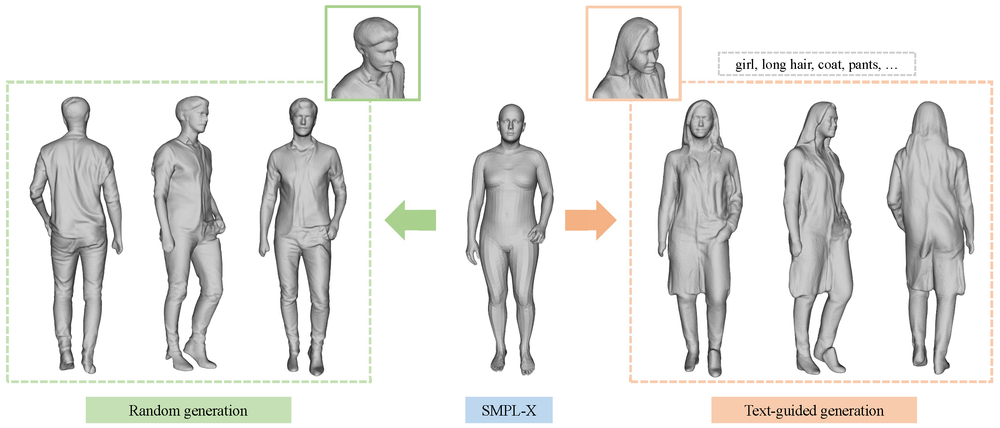
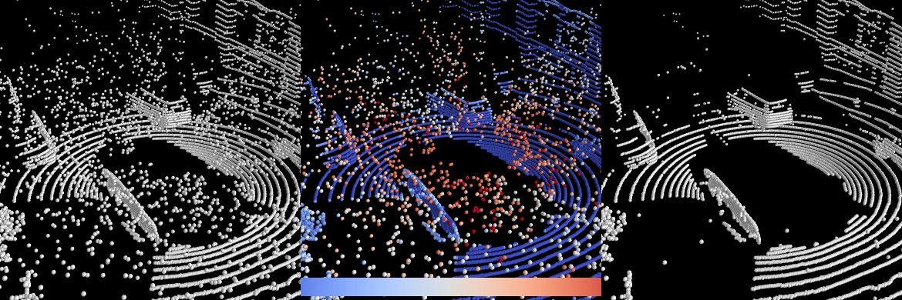

|
I am currently a MS/PhD student at Seoul National University (SNU), advised by Hanbyul Joo.
My research primarily focuses on 3D digital human modeling through the lens of generative models, with a particular interest in compositional modeling. |
{kind=link}
News
- Sep. 2026I’m honored to be named a 2026 Youlchon AI Star.
- Sep. 2026Our work Robot-Factored World Models was accepted to CoRL 2026.
- May 2026I was selected as an Outstanding Reviewer at CVPR 2026.
- Feb. 2026Our works DWM and Vanast were accepted to CVPR 2026.
- Jan. 2026Our work Durian was accepted to ICLR 2026.
Experience
Research
|
Byungjun Kim, Taeksoo Kim, Hyunsoo Cha, Hanbyul Joo CoRL 2026 Project Page arXiv Code We factor action realization and robot appearance out of the world model by rendering actions as visible robot geometry, yielding a shared visual interface that transfers across viewpoints and unseen robot embodiments. |

|
Subin Jeon, Byungjun Kim, Hanbyul Joo arXiv 2026 Project Page arXiv HOPE estimates temporally evolving per-vertex pressure and contact on a hand mesh directly from monocular RGB video, transferring from gloved-hand supervision to bare-hand egocentric and in-the-wild interactions. |
|
Jongbin Lim*, Taeyun Ha*, Mingi Choi, Jisoo Kim, Byungjun Kim, Subin Jeon, Kanghyeon Cho, Seongho Cha, Hanbyul Joo arXiv 2026 Project Page arXiv Code Dataset HRDexDB is a large-scale, multi-modal dataset of 2.1K paired human and robotic hand grasping trials with high-precision 3D annotations, serving as a benchmark for cross-embodiment dexterous manipulation. |
|
Byungjun Kim*, Taeksoo Kim*, Junyoung Lee, Hanbyul Joo CVPR 2026 Project Page arXiv Code We present DWM, a scene-action-conditioned video diffusion model that simulates dexterous human interactions in static 3D scenes. |
|
Hyunsoo Cha, Wonjung Woo, Byungjun Kim, Hanbyul Joo CVPR 2026 · Highlight Project Page arXiv Vanast tackles virtual try-on with human image animation via synthetic triplet supervision, generating identity-preserving, pose-driven try-on videos from a person image and one or more garment references. |
|
Hyunsoo Cha, Byungjun Kim, Hanbyul Joo ICLR 2026 Project Page arXiv The first method for generating portrait animation videos with facial attribute transfer from a given reference image to a target portrait in a zero-shot manner. |
|
Byungjun Kim, Shunsuke Saito, Giljoo Nam, Tomas Simon, Jason Saragih, Hanbyul Joo, Junxuan Li ICCV 2025 · Oral Presentation Project Page arXiv We present HairCUP, a universal prior model for 3D head avatars with hair compositionality, which enables hairstyle swapping and efficient personalization. |

|
Taeksoo Kim*, Byungjun Kim*, Shunsuke Saito, Hanbyul Joo CVPR 2024 Project Page Code arXiv We present GALA, a framework that takes as input a single-layer clothed 3D human mesh and decomposes it into complete multi-layered 3D assets. |
|
Hyunsoo Cha, Byungjun Kim, Hanbyul Joo CVPR 2024 Project Page Code arXiv We present, PEGASUS, a method for constructing personalized generative 3D face avatars from monocular video sources. |

|
Inhee Lee, Byungjun Kim, Hanbyul Joo CVPR 2024 Project Page Code arXiv We present Guess The Unseen, a method to reconstruct the world and multiple dynamic humans in 3D from a monocular video input. |
|
 |
Byungjun Kim*, Patrick Kwon*, Kwangho Lee, Myunggi Lee, Sookwan Han, Daesik Kim, Hanbyul Joo ICCV 2023 · Oral Presentation Project Page Code arXiv We propose Chupa, a 3D human generation pipeline that combines the generative power of diffusion models and neural rendering techniques to create diverse, realistic 3D humans. |
|
 |
Gwangtak Bae, Byungjun Kim, Seongyong Ahn, Jihong Min, Inwook Shim ECCV 2022 arXiv We propose a novel self-supervised learning framework for snow points removal in LiDAR point clouds. |